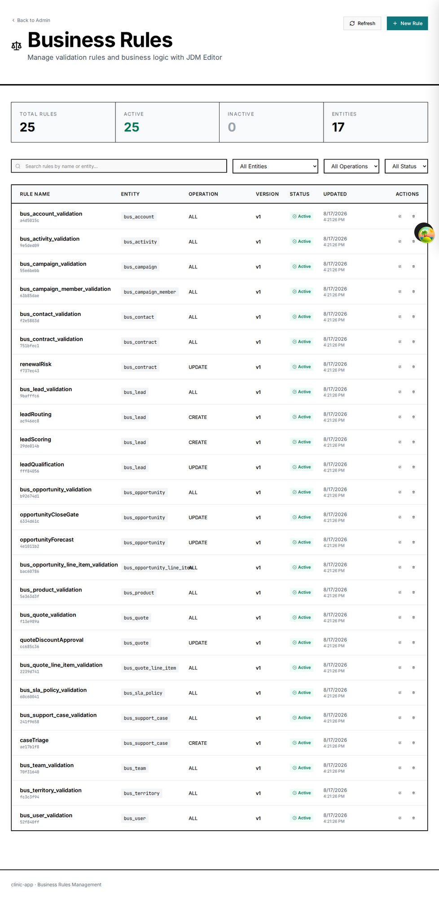
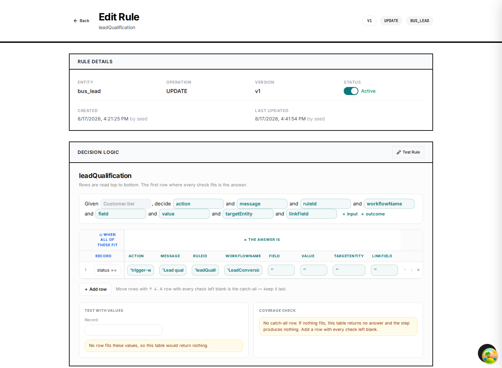
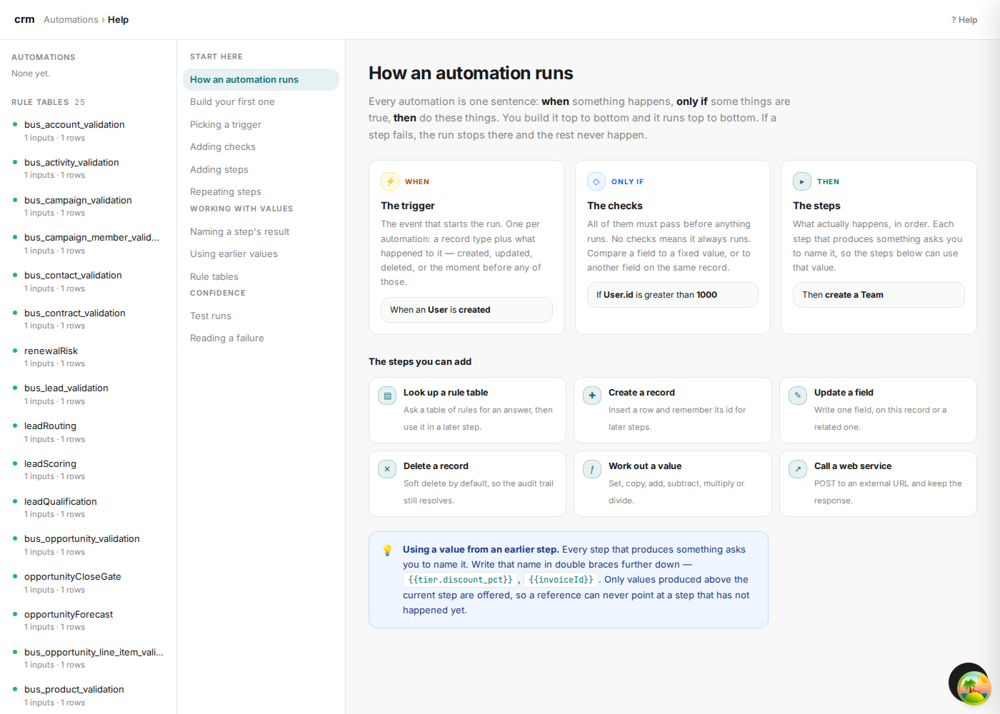

Business rules
A rule is a decision the business makes every time a record is written: what this lead is worth, who picks it up, whether this discount is allowed, how urgent this case is. In EML a rule is a flowchart — a picture a sales manager can read and an engine can evaluate.
Anatomy of a rule section
Two directives above a flowchart turn it into a rule: %%meta kind: rules says
how to read the diagram, and %%rule binds it to an entity and a lifecycle event.
%%meta kind: rules
%%rule leadScoring on Lead event: beforeCreate priority: 10
flowchart TD
...| Part | What it decides |
|---|---|
leadScoring | The rule's name. It appears in the Business Rules screen and is how a saga step can reference the rule instead of copying its table. |
on Lead | The entity. Must be one the ERD declares. |
event: beforeCreate | When it runs. Any of the thirteen lifecycle hooks; before* can still block the write. |
priority: 10 | Order when several rules bind to the same entity and event. Lower runs first. |
Shapes carry the meaning
The node shape is not decoration. It is how the flowchart compiles into a GoRules decision graph.
| Shape | Written | Becomes | Use it for |
|---|---|---|---|
| Stadium | A([Start: Lead Captured]) | Input or output node | The entry point, and each terminal. A stadium with only incoming edges is an output. |
| Diamond | B{score >= 70?} | Switch node | A branch. Label every outgoing edge with its condition. |
| Rectangle | C[Set rating hot] | Expression node | An assignment or an action taken on that branch. |
| Circle | D((Compute lead score)) | Function node | A computation several branches converge on. |
A complete rule
Lead scoring: firmographics, then source, then revenue, then a grade. Each branch adds points; the circle is where they are totalled; the last diamond turns the total into a rating that routing and conversion both read.
%%meta name: Lead Scoring
%%meta kind: rules
%%rule leadScoring on Lead event: beforeCreate priority: 10
flowchart TD
A([Start: Lead Captured]) --> B{employee_count >= 1000?}
B -->|Yes| C[Add 35 firmographic points]
B -->|No| D{employee_count >= 100?}
D -->|Yes| E[Add 20 firmographic points]
D -->|No| F[Add 5 firmographic points]
C --> G{lead_source == referral?}
E --> G
F --> G
G -->|Yes| H[Add 30 source points]
G -->|No| I{lead_source == event?}
I -->|Yes| J[Add 20 source points]
I -->|No| K[Add 8 source points]
H --> L{annual_revenue > 10000000?}
J --> L
K --> L
L -->|Yes| M[Add 25 revenue points]
L -->|No| N[Add 5 revenue points]
M --> O((Compute lead score))
N --> O
O --> P{score >= 70?}
P -->|Yes| Q[Set rating hot]
P -->|No| R{score >= 40?}
R -->|Yes| S[Set rating warm]
R -->|No| T[Set rating cold]
Q --> Z([End: Lead Scored])
S --> Z
T --> ZExactly one start stadium. At least one end stadium. Every diamond has two or more labelled outgoing edges. Every node is reachable from the start. A rule that fails any of these is a rule that will do something other than what the picture shows.
Actions: when deciding is not enough
A decision flow works out an answer. An action is what the engine does with it. Without actions a modelled rule could only ever think; these are how it reaches the record and the rest of the application.
| Action | Effect | Requires |
|---|---|---|
validation-error | Rejects the write; the message goes back to the caller. | message |
transform | Overwrites a field on the record being written. | field, value |
trigger-workflow | Runs a workflow by name — this is how a condition starts a process. | workflow |
%%rule quoteDiscountApproval on Quote event: beforeUpdate priority: 10
flowchart TD
A([Start: Quote Priced]) --> B{discount_percent > 40?}
B -->|Yes| C[Reject: Above the maximum discount]
B -->|No| D{discount_percent > 25?}
D -->|Yes| E[Require VP approval]
D -->|No| F{discount_percent > 15?}
F -->|Yes| G[Require sales manager approval]
F -->|No| H{discount_percent > 0?}
H -->|Yes| I[Auto approve within rep authority]
H -->|No| J[No discount applied]
...
%%action escalateDiscount trigger-workflow when: discount_percent > 15 workflow: QuoteApprovalEscalation message: Discount above rep authority — holding the quote for approval
%%action refuseDiscount validation-error when: discount_percent > 40 message: Discounts above 40 percent cannot be approved by anyone — reprice the quote
The when: expression is evaluated against the record being written. when: true
fires on every write and is a legitimate choice — say it deliberately, because a missing
when means the same thing by accident and the checker warns about it
(EML282).
trigger-workflow is how chapter 02 reaches chapter 03. The rule owns the
condition; the workflow owns the steps. Keeping them apart is what lets you change
"when do we escalate?" without touching "what does escalating do?".
The eight rules in the CRM
| Rule | Entity · event | Decides |
|---|---|---|
leadScoring | Lead · beforeCreate | Score from firmographics and source; grade hot / warm / cold. |
leadRouting | Lead · afterCreate | Which desk picks it up. Partner leads go back to the partner desk whatever their size. |
leadQualification | Lead · beforeUpdate | Whether a lead may convert. Emits trigger-workflow → LeadConversion. |
opportunityForecast | Opportunity · beforeUpdate | Probability and forecast category, derived from stage rather than typed in. |
opportunityCloseGate | Opportunity · beforeUpdate | What a deal must have before anyone may call it won. |
quoteDiscountApproval | Quote · beforeUpdate | Discount authority bands; escalates or refuses. |
caseTriage | SupportCase · beforeCreate | Priority from account tier and case type. Escalates a critical case. |
renewalRisk | Contract · beforeUpdate | Grades a renewal. The renewal saga evaluates this rule as a step. |
Where they land in the application

Open one and you get the decision table the flowchart compiled into, with a test panel and a coverage check. This is a real editor: an operations person can change a threshold here without a deploy, and the model stays the source of truth for what gets seeded on the next generation.
leadQualification in the editor. The input is status; the outputs
carry the action (trigger-workflow), its message, and the workflow name
(LeadConversion). The coverage panel warns that there is no catch-all row — worth knowing
before a record falls through it.

Rules an administrator can write without you
The 25 seeded rule tables are not the ceiling. The same screen carries an automation builder, and it ships with its own documentation — written for the person configuring the system, not for the person who generated it.
{{tier.discount_pct}}. None of this text was written for the CRM; it is generated
alongside it.

A generator that emits logic you cannot change afterwards has only moved the bottleneck. Here the decision tables are data, the editor is part of the application, and the person changing a threshold needs neither the repository nor a deploy window.
When rules run
Rules are evaluated inside the transaction that saves the record. If one fails, the write is rolled back and nothing it changed survives. That is the difference between a rule and a reminder: you cannot get a record into the database that violates one.
The generated application shows this as a document status. Every save starts as Draft; the rules and workflows attached to the entity run together; if all of them succeed the record becomes Final. If any fails, the record stays Draft with the reason written onto it, so you can fix the cause and retry.